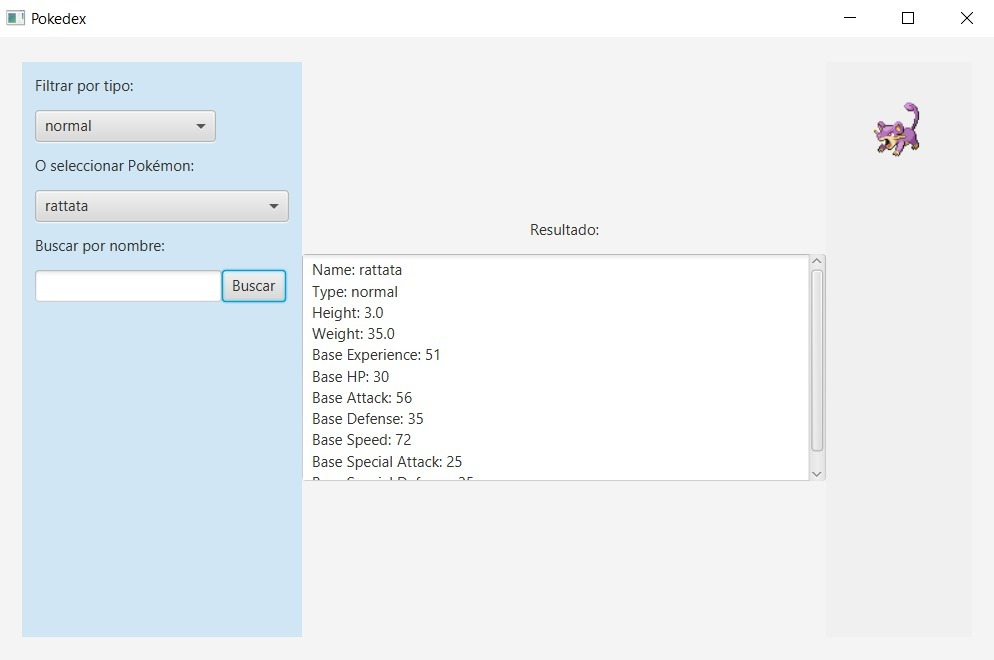
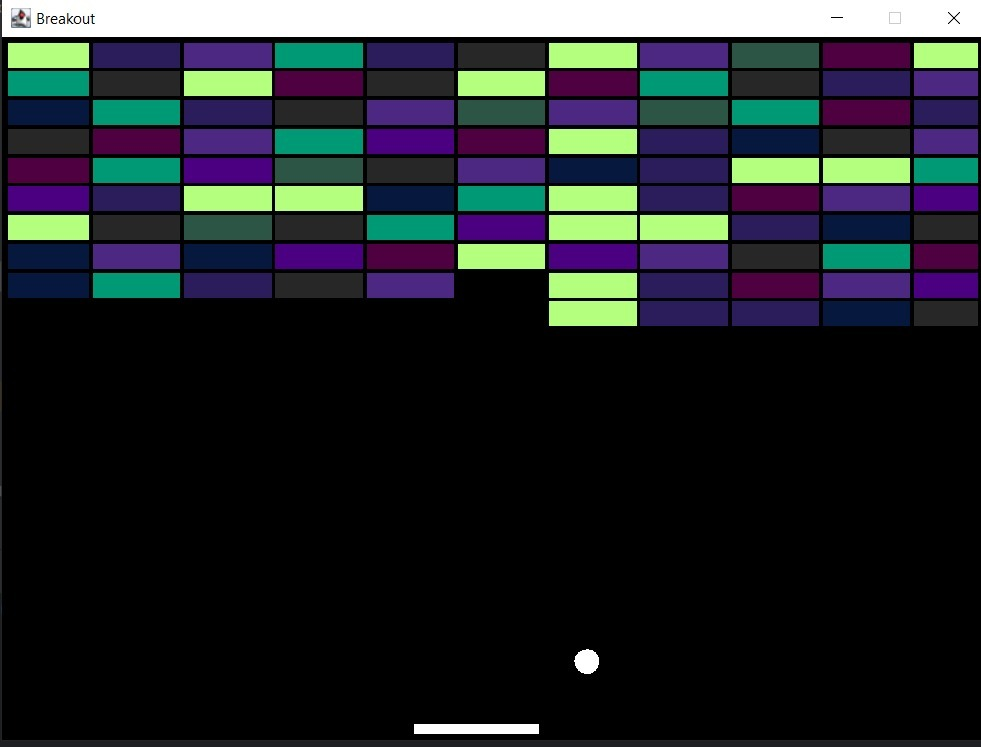
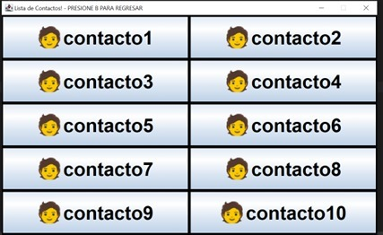
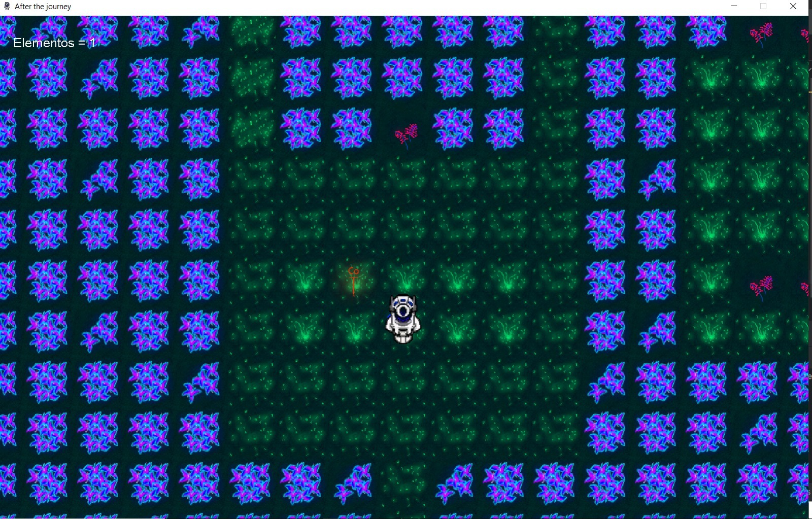

Soy un estudiante de Ingeniería en Sistemas de Información con interés en el área de backend. A lo largo de mi estadía académica, he fortalecido mis conocimientos en arquitectura de software, bases de datos y programación en lenguajes como Java, SQL, PHP, JS etc. Me considero una persona analítica, capaz de resolver distintas tareas y problemas de programación. Estoy interesado en seguir creciendo personalmente en el desarrollo de sistemas y contribuir a proyectos innovadores que permitan mejorar la eficiencia y escalabilidad de aplicaciones y sistemas.
Capacidad para analizar problemas complejos y proponer soluciones que ayuden a resolver distintos conflictos.
Experiencia en proyectos académicos en equipo, desarrollando habilidades de comunicación, unión y apoyo.
Capacidad de coordinar y motivar a un equipo. Manejar problemas que surgen dentro del equipo o proyecto.
Aplicación en java, interactiva que utiliza la PokeApi para mostrar información detallada sobre diferentes Pokémon. Implementé la integración con la API y desarrollé funcionalidades como búsqueda avanzada y filtrado por tipos, habilidades y estadísticas.
Desarrollo de un videojuego arcade muy conocido, contribuyendo en la programación de la física de colisiones y diseño de niveles. Trabajo en equipo para implementar mecánicas de juego y pruebas de usuario para asegurar una experiencia fluida y divertida.
Desarrollo de una agenda digital que permite a los usuarios almacenar información básica sobre sus contactos. Además, incluye funcionalidades de edición de texto, lo que facilita la organización y personalización de la información.
Diseño de un juego educativo, interactivo destinado a enseñar a niños los elementos de la tabla periódica. Diseño de mecánicas de recolección de ítems que permiten a los jugadores identificar símbolos químicos y responder preguntas sobre los elementos correspondientes. Fomenté el aprendizaje divertido y dinámico, mejorando la comprensión de conceptos científicos básicos entre los participantes.
